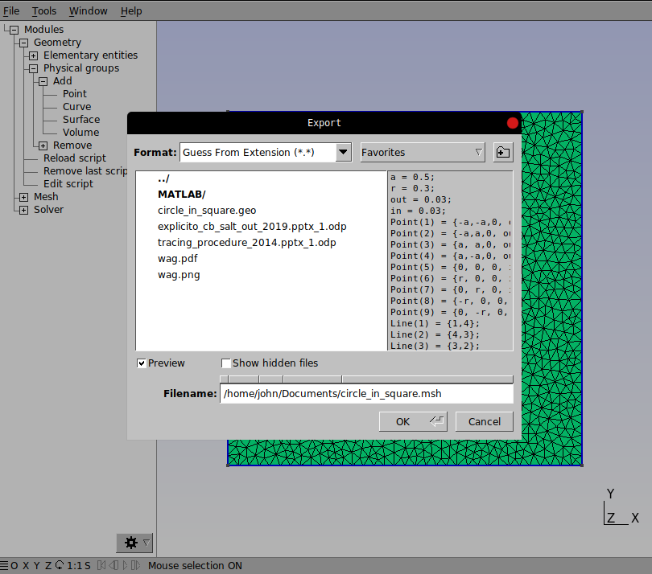
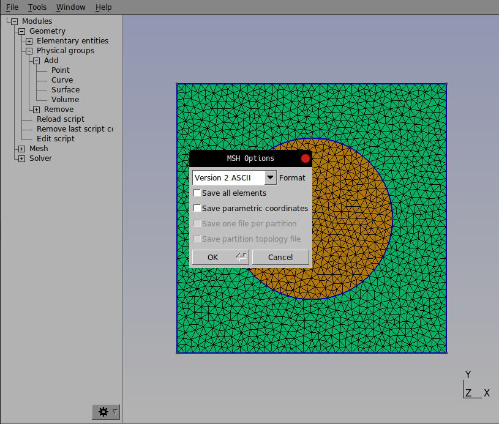

Gmsh: exporting old msh format
This post is mainly aimed at my colleagues (and students) in the LMCG research group at LITPEG. After many people going to me, asking about a bug of p3matpac preprocessor, I decide to write it.
After the Gmsh 4.0.0 release, Christophe Geuzaine and Jean-François Remacle set the new msh version (msh4) as default msh format (I guess... ). After that, new students and colleagues have faced with a following error:
>>> g = gridprocessing.load_gmsh('mesh_test.msh') Unknown mesh format: 4.1 0 8
There are 3 ways to fix this: GUI, CLI, and script 1.
GUI mode
You need to have the following steps:
1) Press Ctrl+E shortcut to open the export window:

2) Select the Version 2 ASCII and OK.

Done!!
CLI mode
Using the command line interface all you need is run this:
gmsh mesh_test.geo -2 -format msh2
Script
Just put this Mesh.MshFileVersion = 2.2; into *.geo script file.
Other way
Using this mode, gmsh will always save in msh format 2.2. All you need is add this lines:
Mesh.Format = 1; // msh output format Mesh.MshFileVersion = 2.2; // Version of the MSH file format to use
Into .gmshrc file, by this command:
echo "Mesh.Format = 1; // msh output format Mesh.MshFileVersion = 2.2; // Version of the MSH file format to use" >> ~/.gmshrc
-
Some steps ilustrated here can also be found on Gmsh: MSH file format ↩